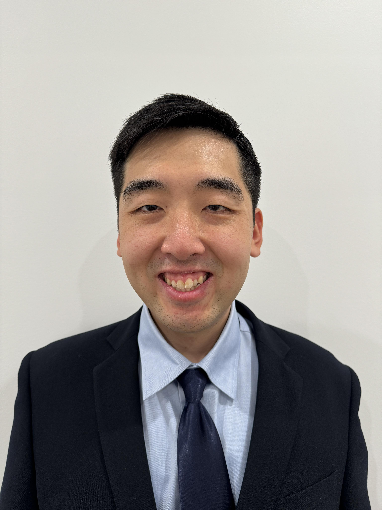

Charles Ly

Summary
Diligent, detail-orientated and highly motivated individual with several years of client-
facing work experience. Seeking a challenging and rewarding role where I can fully utilise my strengths
and meaningfully contribute to the organisation’s growth and objectives.
Education
- Masters of Commerce, Economics & Finance - University of Sydney (March 2021 - June 2023)
- Bachelor of Science, Statistics / Bachelor of Arts, Criminology, Philosophy - University of New South Wales (March 2013 – July 2017)
Work experience
Table Games Dealer - The Star (Sydney)
February 2023 – Present
- Remained composed and positive during busy periods while also providing fun customer experiences and following gaming procedures.
- Maintained vigilance and table security by informing the guests about correct conduct on the table and raising issues to the supervisor.
Internal Audit Associate - PricewaterhouseCoopers (Sydney)
January 2024 – May 2024
- Assisted seniors with administrative tasks such as taking meeting minutes and data entry and also assisted associates on how to effectively use the MS Office Suite.
- Consistently clarified the scope of the task and communicated expectations with clients, seniors and managers.
- Effectively managed and owned multiple reviews and tasks while working with tight deadlines and with minimal supervision.
- Meticulously and regularly reviewed documents, spreadsheets and presentation slides with the correct data and formatting.
Market Analyst Intern - NorthStar Impact Funds (Sydney)
August 2022 – October 2022
- Evaluated the venture capital impact market and compiled a report which highlights the state of the market and where the growth opportunities lie.
- Prepared a database of potential companies which are committed to ocean sustainability and decarbonisation to assist in the fund’s investment decisions.
Financial Services Administrator - Colonial First State (Sydney)
September 2018 – February 2021
- Investigated escalated cases to analyse the case timeline and events in order to determine the best course of action.
- Processed complex, time-sensitive superannuation applications with accuracy while maintaining professionalism.
- Corresponded with vulnerable and sensitive customers to ensure that their needs are met efficiently and adequately, while displaying care and empathy.
Administrator - Coffey Services Australia (Chatswood)
September 2017 – September 2018
- Oversaw financial duties such as processing and calculating the cost of invoices and raising purchase orders.
- Assisted in organising reports to ensure consistency and to maintain a high level of standards.
- Performed covering receptionist duties, which developed my communication and people skills.
Skills
- Delivering high-quality work with great care and excellent attention to detail.
- Superb critical thinking and problem-solving skills, able to find solutions in an optimal and time-efficient manner.
- Great verbal and written communication skills, able to attend to the customer’s needs and enquiries.
- Supportive and open-minded team player who can collaborate with others from diverse backgrounds.
- Strong mathematical skills, able to solve mathematical problems quickly and accurately.
- Resilient and able to remain calm and positive in high-pressure environments.
- Proficient in Python at the intermediate level.
Awards and Certifications
Other